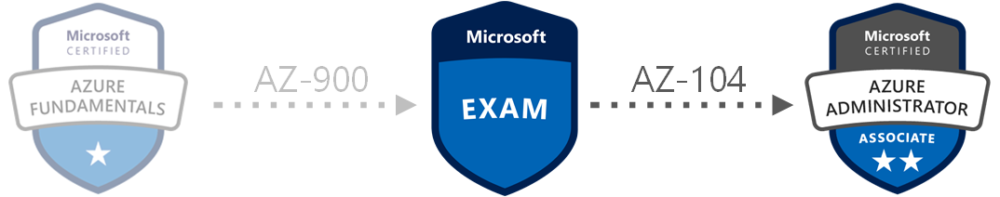

AZ-103 to AZ-104 Exam Changes
February 14, 2020
Estimated reading time: 10 minutes
First out in this little series of the 2020 Azure certification exam changes is the new AZ-104 exam that will be replacing the old AZ-103 exam. First of the bat when I skimmed trough the new Skills Measured document I could see that there are some large changes from the AZ-103 exam. It is not a total revamp, but there are some changes to important areas like Monitoring and Networking.
The new Skills Measured now starts with explicably mentioning that hands-on experience is recommended. But I have thought that this has or should have always been the case, but it is nice that they now have mentioned it in the introduction.
The new Skills Measured document that currently are under development can be read at Microsoft’s Certification pages. A link to that document can be found here: Exam AZ-103: Microsoft Azure Administrator –Skills Measured
In this overview I have read trough the new document and compared it to the old one for the AZ-103 exam. I will go trough each section of the new AZ-104 exam and highlight the largest changes and my opinions about the changes. But a summarized list of changes are the following:
- Decreased focus on storage
- Decreased focus on Azure AD
- Decreased focus on Governance
- Increased focus on Monitoring
- Increased focus on Compute (VM, Containers and Web App)
- Increased focus on Networking and Security
So lets move on to checking out the changes in the individual sections of the Skills Measured on the exam now.
Section 1: Manage Azure Identities and Governance (15-20%)
This section is new, but it looks like this sections is a renamed version of the old Manage Azure subscriptions and resources section in the old exam.
This section now also includes topics about Identity as well as resource governance.
For me this looks like the focus has been decreased on Azure AD and identities for this exam in total since the old Manage identities section is no longer here.
it is now a topic in this new section, and shares relevance on the exam with 2 other topics as well as that there are less sub-topics about Azure AD. (MFA and Hybrid identities are gone.)
The topics regarding monitoring and alerting have been removed from this section, and there are now a dedicated section for monitoring. So an increased amount of questions on monitoring is to be expected.
The exam relevance of this section has not changed, (still 15-20%) but its content have changed some. The amount of topics in this section has decreased from 4 to 3, since the topics for monitoring are gone. Based on this I would expect a larger amount of questions about RBAC and governance than we had before. I also expect a lot less questions about Azure AD and Identities than before. This is because it previously had a 15-20% relevance as its own section, and are now a part of the 15-20% relevance of this section.
- 1.1: Manage Azure AD objects
- Create users and groups
- Manage user and group properties
- Manage device settings
- Perform bulk user updates -
- Manage guest accounts
- Configure Azure AD Join
- Configure self-service password reset
- 1.2 Manage role-based access control (RBAC)
- Create a custom role
- Provide access to Azure resources by assigning roles to:
- Subscriptions
- Resource groups
- Resources (VM, disk, etc.)
- Interpret access assignments
- Manage multiple directories
- 1.3 Manage subscriptions and governance
- Configure Azure policies
- Configure resource locks
- Apply tags
- Create and manage resource groups
- Move resources
- Remove Resource Groups
- Manage subscriptions
- Configure Cost Management
- Configure management groupsSection 2: Implement and Manage Storage (10-15%)
This section is still with us from the AZ-103 exam. But the exam relevance has decreased by 5% down to 10-15%. The structure and content of this section has changed some. And as the decreased exam relevance can imply, this revamped section contain a bit less content.
The structure of the topics and sub topics have changed a lot in this section. And it has been shuffled around some.
Some of the more noticeable changes are that the topic about Azure backup have been moved down to Section 5 - Monitor and back up Azure resources.
The references to monitoring has also been removed, and are moved to the same section.
The references to CDN, and Azure Data Factory gone. Azure Data Box is no longer directly referenced, but is still a part of the Export/Import of Azure jobs. Left are sub-topics more concentrated on Azure blob storage and Azure Files.
So even if the relevance have gone down, I would expect more questions about the storage technologies: blob storage and files, and how to correctly use and configure those.
- 2.1 Manage storage accounts
- Configure network access to storage accounts
- Create and configure storage accounts
- Generate shared access signature
- Manage access keys
- Implement Azure storage replication
- Configure Azure AD Authentication for a storage account
- 2.2 Manage data in Azure Storage
- Export from Azure job
- Import into Azure job
- Install and use Azure Storage Explorer
- Copy data by using AZCopy
- 2.3 Configure Azure files and Azure blob storage
- Create an Azure file share
- Create and configure Azure File Sync service
- Configure Azure blob storage
- Configure storage tiers for Azure blobsSection 3: Deploy and Manage Azure Compute Resources (25-30%)
Right of the bat we can see that this section has been renamed, and the virtual machines have now been renamed to Azure compute resources.
The exam relevance have increased from by 10% from 15-20% to 25-30%. So expect more questions about “compute resources”.
As the renaming implies, this section is no longer just centered around managing virtual machines and now covers services like Azure Kubernetes Service, Azure Container Instances and Azure Web Apps.
But even with the addition of these new services the 10% increase in relevance fits with the addition of the two new sections, so I would expect around the same amount of questions regarding VMs.
Note that the topic about backup og VMs has been moved to the new Section 5 - Monitor and back up Azure resources
The addition of the other compute resources (AKS, ACI and WebApps) will add some questions to the exam about these technologies that were not in the previous edition of the exam.
- 3.1 Configure VMs for high availability and scalability
- Configure high availability
- Deploy and configure scale sets
- 3.2 Automate deployment and configuration of VMs
- Modify Azure Resource Manager (ARM) template
- Configure VHD template
- Deploy from template
- Save a deployment as an ARM template
- Automate configuration management by using custom script extensions
- 3.3 Create and configure VMs
- Configure Azure Disk Encryption
- Move VMs from one resource group to another
- Manage VM sizes
- Add data discs
- Configure networking
- Redeploy VMs
- 3.4 Create and configure containers
- Create and configure Azure Kubernetes Service (AKS)
- Create and configure Azure Container Instances (ACI)
- 3.5 Create and configure Web Apps
- Create and configure App Service
- Create and configure App Service PlansSection 4: Configure and Manage Virtual Networking (30-35%)
Even with the increased relevance of Section 3: Deploy and Manage Azure Compute Resources this section is still the one that holds the most relevance on the exam.
The content changes for this section are not that large as in the other sections.
The renaming of Create and configure a Network Security Group (NSG) to Secure access to virtual networks is a change that reflect the content better.
The requirement for knowledge of network addressing, routes and subnets are now highlighted as its own sub-topic and not “hidden” in other topics or sub-topics as before. This will make this easier to study for.
The changes are otherwise small, with the exception of the addition of Application Gateway, Azure Bastion and Azure Firewall. These are all very welcome additions to this section and underlines an increased focus on network security.
Question-wise on the exam, I would expect much of the same as before. The new additions will of course get some exam questions, so would expect that some of the questions from the other topics will get sacrificed to make room for the questions for these new topics. So a little less on the rest of the topics is to be expected.
- 4.1 Implement and manage virtual
- Create and configure VNET peering
- Configure private and public IP addresses, network routes, network interface, subnets, and virtual network
- 4.2 Configure name resolution
- Configure Azure DNS
- Configure custom DNS settings
- Configure a private or public DNS zone
- 4.3 Secure access to virtual networks
- Create security rules
- Associate an NSG to a subnet or network interface
- Evaluate effective security rules
- Deploy and configure Azure Firewall
- Deploy and configure Azure Bastion Service
- 4.4 Configure load balancing
- Configure Application Gateway
- Configure an internal load balancer
- Configure load balancing rules
- Configure a public load balancer
- Troubleshoot load balancing
- 4.5 Monitor and troubleshoot virtual networking
- Monitor on-premises connectivity
- Use Network resource monitoring
- Use Network Watcher
- Troubleshoot external networking
- Troubleshoot virtual network connectivity
- 4.6 Integrate an on-premises network with an Azure virtual network
- Create and configure Azure VPN Gateway
- Create and configure VPNs
- Configure ExpressRoute
- Verify on premises connectivity
- Configure Azure Virtual WANSection 5: Monitor and back up Azure resources (10-15%)
This section is a brand new section.
The content of the section it replaces is merged into some of the other sections with most beeing merged into: Section 1: Manage Azure Identities and Governance.
This new section will in my opinion fit a Azure administrator role very well.
This new section ensures that there are now an increased focus on monitoring, analyzing logs and backup for this new exam and the administrator certification.
Previously some of these topics were a part of other sections, but now this new section makes the Skills Measured a bit more easier to read and more focused on what is relevant.
A quick note is that you now have to learn the basics of the Kusto query language(KQL) for this exam. You could easily pass the previous exam without much knowledge of KQL.
So I will expect that there are practical questions like in the old AZ-103, and that you now have to write queries as a part of the exam instead of just reading or correcting queries as a multiple choice question.
As mentioned, the old exam had some of these topics mixed in before. But because of this new section I will expect there to be a lot more questions about monitoring and logs than before. So if I were to study for this exam I would focus a bit on this section.
- 5.1 Monitor resources by using Azure Monitor
- Configure and interpret metrics
- Analyze metrics across subscriptions
- Configure Log Analytics
- Implement a Log Analytics workspace
- Configure diagnostic settings
- Query and analyze logs
- Create a query
- Save a query to the dashboard
- Interpret graphs
- Set up alerts and actions
- Create and test alerts
- Create action groups
- View alerts in Azure Monitor
- Analyze alerts across subscriptions
- Configure Application Insights
- 5.2 Implement backup and recovery
- Configure and review backup reports
- Perform backup and restore operations by using Azure Backup Service
- Create a Recovery Services Vault
- Use soft delete to recover Azure VMs
- Create and configure backup policy
- Perform site-to-site recovery by using Azure Site Recovery